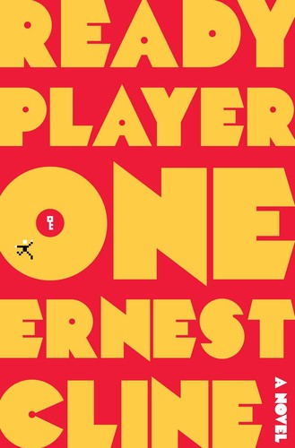

Ready Player One: Nostalgia Bait, and I Ate It Up

A dying billionaire hides his entire fortune inside a global VR system and turns the whole damn planet into 80s-trivia-obsessed egg hunters — Wade Watts chasing that prize through old games and dead pop culture is just a fun-as-hell premise, full stop.
Silly setup, real stakes
Nostalgia-bait in the best way, and the stakes never feel fake even when the setup gets a little silly. The OASIS is the kind of setting that scratches the same itch a good LitRPG world does — a system with rules, and a guy learning to game them.
[Narration note] Wil Wheaton narrates this one and it's a perfect match — dude practically lived through the same 80s shit Cline's constantly name-dropping, so it never sounds like he's reading off a script he doesn't get.
8.5/10. Easy listen, hard to put down, and one of the few sci-fi picks that hooked me as hard as the progression stuff does.